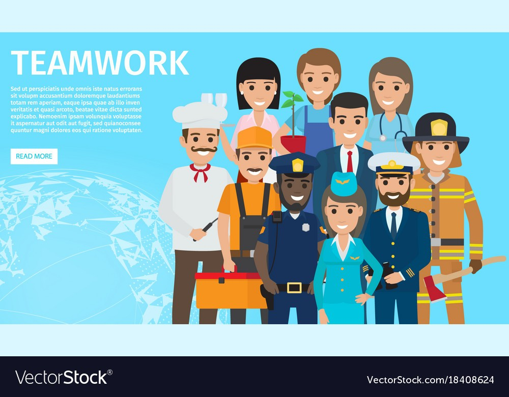

Listen to music while reading ^^
Ano ang paglilingkod?
SEKTOR NG PAGLILINGKOD
-Ang umaalalay sa buong yugto ng produksyon, distribusyon, kalakalan, at pagkonsumo ng mga produkto sa loob o labas ng bansa.
-Kilala rin ito bilang tersarya o ikatlong sektor ng ekonomiya matapos ang agrikultura at industriya.
MGA SULIRANIN:
-Unemployment
-Brain Drain (Ang mga magagaling ay nasa abroad)
-Job mismatch
-Underemployment (Hindi nabibigyang oras sa trabaho, at hindi akma ang mga kasanayan/skills)
SAKLAW NG HANDBOOK:
-Ang handbook ay para sa mga manggagawa sa pribadong sektor. Nakapaloob dito ang mga minimum na benepisyong itinakda ng batas na dapat ibigay ng employer.
Hindi saklaw ang:
Mga empleyado ng gobyerno
Managerial employees (sa ilang benepisyo gaya ng overtime at holiday pay)
Field personnel (depende sa kondisyon ng trabaho)
PORMAL NA SEKTOR SA ILALIM NG PAGLILINGKOD
Transportasyon, komunikasyon, at mga imbakan
Mga serbisyong pampublikong sasakyan, mga paglilingkod ng telepono at mga pinapaupahang bodega.
Kalakalan
Pagpapalitan ng iba’t-ibang produkto at serbisyo.
Pananalapi
Serbisyong may kinalaman sa bangko, insurance, at pamumuhunan.
Nagbibigay ng tulong pinansyal gaya ng mga bangko, bahay-sanglaan, atbp.
Paupahang bahay at Real Estate
Mga paupahan tulad ng mga apartment, mga developer ng subdivision, town house, at condominium.
Paglilingkod ng Pampribado
Lahat ng mga paglilingkod na nagmumula sa pribadong sektor ay kabilang dito.
Paglilingkod ng Pampubliko
Lahat ng paglilingkod na ipinagkakaloob ng pamahalaan.
MGA AHENSIYANG TUMUTULONG SA SEKTOR NG PAGLILINGKOD
Department of Labor and Employment (DOLE)
Pangangalaga sa kapakanan ng mga manggagawang Pilipino, pagtataguyod ng maayos na oportunidad sa trabaho, at regulasyon ng mga patakaran sa paggawa sa bansa.
Overseas Workers Welfare Administration (OWWA)
Tumitingin sa kapakanan ng mga Overseas Filipino Workers
Philippine Overseas Employment Administration (POEA)
Isulong at paunlarin ang mga programa ukol sa paghahanapbuhay sa ibayong-dagat at pangalagaan ang kapakanan ng mga OFW.
Itinatag sa bisa ng Executive Order 797 (1982)
Technical Education and Skills Development Authority (TESDA)
Hikayatin ang buong partisipasyon ng industriya, paggawa, mga lokal na pamahalaan, at mga institusyong teknikal at bokasyonal upang sanayin at paunlarin ang kasanayan ng mga manggagawa sa bansa.
Itinatag sa bisa ng R.A. 7796 (1994)
Professional Regulation Commission (PRC)
Nangangasiwa at sumusubaybay sa gawain ng mga manggagawang propesyonal upang matiyak ang kahusayan sa paghahatid ng mga serbisyong propesyonal sa bansa.
Commission on Higher Education (CHED)
Nangangasiwa sa gawain ng mga pamantasan at kolehiyo sa bansa upang maitaas ang kalidad ng edukasyon sa mataas na antas.

Ano-ano ang mga batas?
MGA BATAS NA NANGANGALAGA SA KARAPATAN NG MANGGAGAWA
Artikulo 94 - Holiday Pay
Tumutukoy sa bayad ng isang manggagawa na katumbas ng isang araw na sahod kahit hindi pumasok sa araw ng pista opisyal.
May bayad kahit hindi pumasok kapag regular holiday, kung saklaw.
Mga halimbawa ng regular holidays:
New Year's Day (Jan 1)
Independence Day (June 12)
Christmas Day (Dec 25)
Karaniwang rate:
100% ng sahod kung hindi pumasok (regular holiday)
200% kung pumasok sa regular holiday
Mas mataas ang bayad kung holiday at rest day na nagkataon.
Republic Act 6727 - Wage Rationalization Act
Nagsaad ng mga mandato para sa pagsasaayos ng pinakamababang pasahod o minimum wage
Ang minimum wage ay itinatalaga ng mga Regional Tripartite Wages and Productivity Boards (RTWPBs) depende sa rehiyon. Dapat sundin ng employer ang umiiral na minimum wage sa kanilang rehiyon.
Artikulo 91-93 - Premium Pay
Karagdagang bayad sa manggagawa sa loob ng walong oras na trabaho sa araw ng pahinga at special days
Karagdagang bayad sa pagtatrabaho na lampas sa 8 oras sa isang araw.
Karaniwang rate: 125% ng regular wage.
Mas mataas kung overtime sa holiday o rest
Artikulo 86 - Night Shift Differential
Karagdagang bayad sa pagtatrabaho sa gabi na hindi bababa sa 10% ng kanyang regular na sahod sa bawat oras na ipinagtrabaho sa pagitan ng 10PM - 6AM.
Artikulo 96 - Service Charges
Lahat ng manggagawa sa isang establishment na kumokolekta ng service charges ay may karapatan sa isang pantay o tamang bahagi sa 85% na kabuuang koleksiyon
100% ng nakolektang service charge ay dapat ipamahagi sa non-managerial employees sa establishments tulad ng hotel at restaurant.
Artikulo 95 - Service Incentive Leave
Bawat manggagawa na naglilingkod nang hindi kukulangin sa isang taon ay dapat magkaroon ng karapatan sa taunang service incentive leave ng limang araw na may bayad
5 araw na bayad na leave kada taon.
Para sa empleyadong may hindi bababa sa 1 taon na serbisyo.
Maaaring i-convert sa cash kung hindi nagamit.
Republic Act 1161 - Maternity Leave
Ang bawat nagdadalang-taong manggagawa na nagtratrabaho sa pribadong sektor, kasal man o hindi, ay makakatanggap ng maternity leave.
Kasama ito sa benepisyong katumbas ng isang 100% na humigit kumulang na araw ng sahod ng manggagawa na nakapaloob sa batas
Ayon sa Expanded Maternity Leave Law:
105 days paid maternity leave (live childbirth)
May dagdag na 15 days para sa solo parent
60 days kung miscarriage o emergency termination
Republic Act 8972 - Paternity Leave para sa mga solong magulang
Ipinagkaloob sa sinumang solong magulang o indibidwal na napag-iwanan ng responsibilidad ng pagiging magulang
Sa ilalim ng Solo Parents' Welfare Act (naamyendahan ng RA 11861):
7 days na paid leave kada taon
Para sa kwalipikadong solo parent
Republic Act 8187 - Paternity Leave
Maaaring magamit ng empleyadong lalaki sa unang apat na araw mula nang manganak ang legal na asawa na kaniyang kapisan
Pakikipagpisan: obligasyon ng asawang babae at asawang lalaki na magsama sa isang bubong
Ayon sa Paternity Leave Act of 1996:
7 days na paid leave
Para sa legal na asawa ng nanganak
Hanggang sa unang 4 na panganganak
Presidential Decree 851 - Thirteenth Month Pay
Nagbibigay sa mga empleyado nang hindi lalagpas ng ika-24 ng Disyembre bawat taon.
Lahat ng rank-and-file employees ay may karapatan.
Katumbas ng 1/12 ng kabuuang basic salary sa loob ng taon.
Presidential Decree 626 - Benepisyo sa Employees Compensation Program
Isang compensation package sa mga manggagawa sa pampubliko at pambribadong sektor sakaling may kaganapang pagkakasakit na may kaugnayan sa trabaho
Republic Act 9262 - Leave for Victims of Violence Against Women and Children (VAWC)
Ayon sa Anti-VAWC Act of 2004:
10 days na paid leave
Para sa babaeng empleyadong biktima ng VAWC